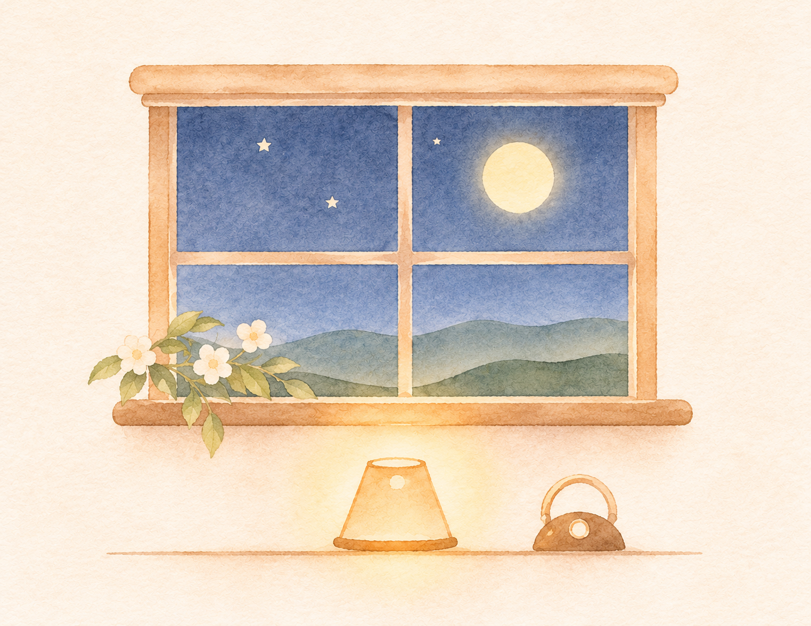
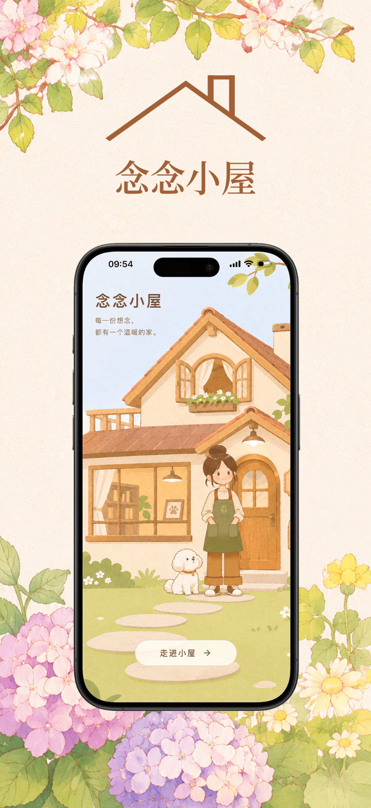
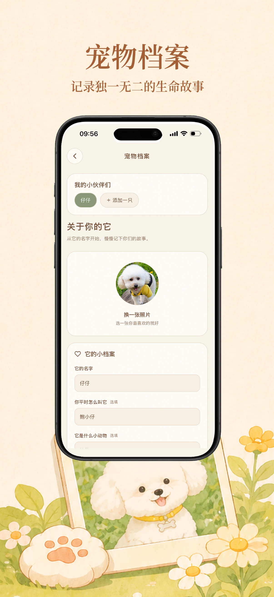
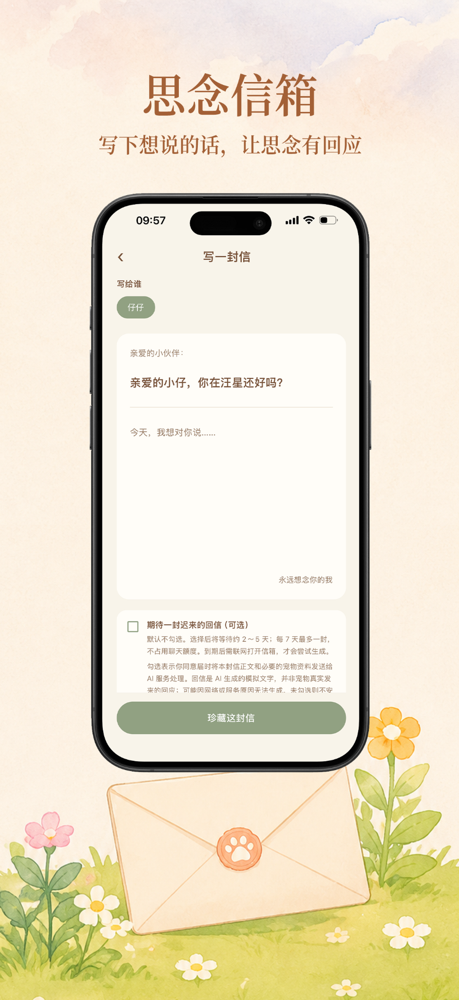
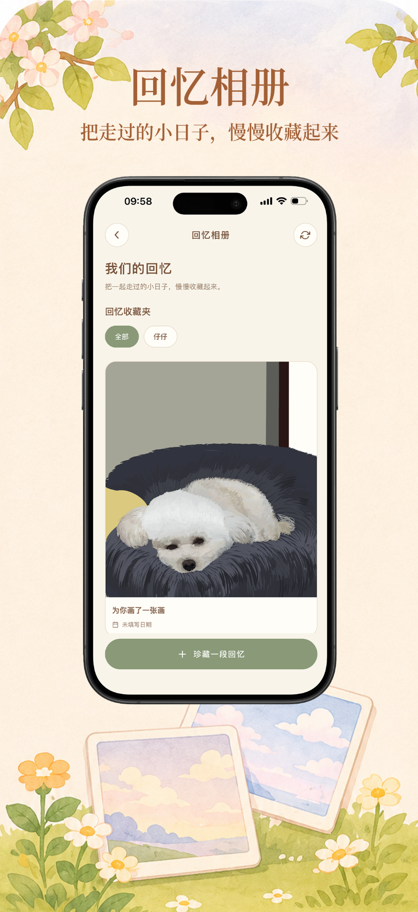
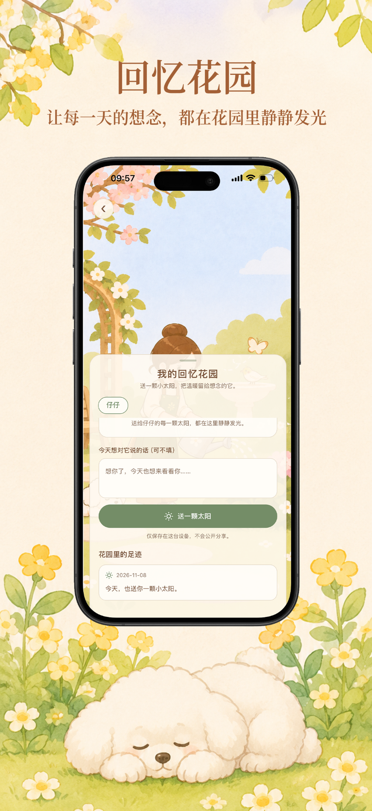

✳
想念不需要被催促，
也不必被遗忘。
我们不提供告别服务，只想为你留一处随时可以回去的小屋。它不要求你走出来，也不会催你放下。
FIVE LITTLE ROOMS
小屋里有五个房间，
各自安静地等着。
从一张照片到一封信，慢慢把那些珍贵的日子收好。

INSIDE THE APP
小屋里的样子
看一看真实的 App 展示图。左右滑动，慢慢浏览。

走进小屋

宠物档案

思念信箱

回忆相册

回忆花园